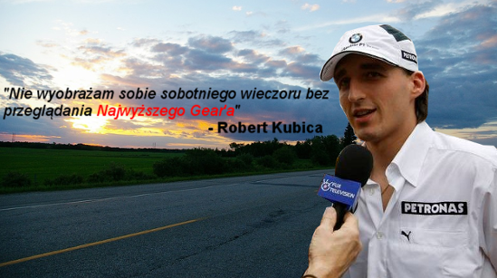

Na naszym portalu znajdziesz:
- newsy, czyli co nowego w świecie motoryzacji?
- opinie, które z pewnością pomogą Ci,jeśli szukasz nowej maszyny,
- tuning, czyli czego potrzebuje Twoja bryka?
- hardkorów miesiąca, czyli foty naszych czytelników z ich furami,
oraz nasze social media!

Kto jak kto, ale Robert Kubica raczej wie co mówi!
Jednoczymy wszystkich polskich motoryzacyjnych hardkorów!
Dołącz do nas i nie bój się pokazywać swojej zajawki innym!